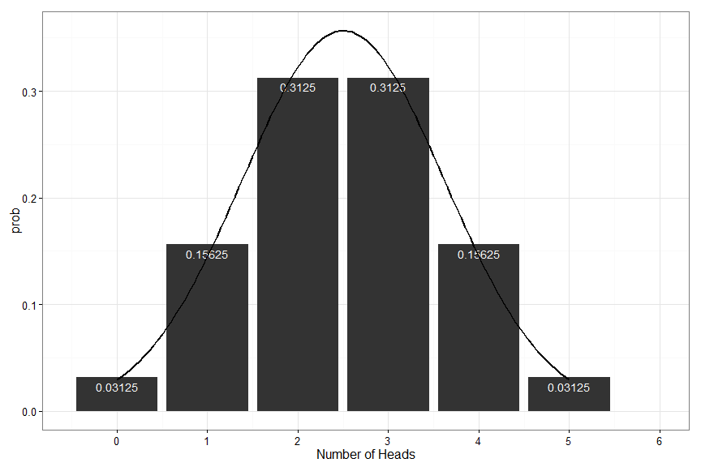
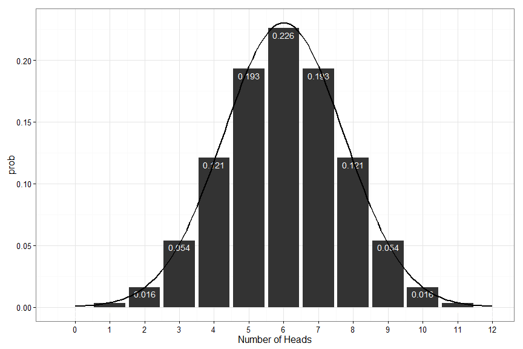

PSQF 4143: Section 6

Brandon LeBeau

Example: Flipping a coin \[Pr(heads) = \frac{\mbox{number of heads observed}}{\mbox{total number of flips}}\] \[ = \frac{f(heads) }{N}\] when observations are recorded for an infinite number of flips
Example: Rolling a fair, six-sided die \[S = {1, 2, 3, 4, 5, 6}\] \[Pr(1) = Pr(2) = Pr(3) = Pr(4) = Pr(5) = Pr(6) = 1/6\] \[Pr(s_{1}) = Pr(s_{2}) = Pr(s_{3}) = Pr(s_{4}) = Pr(s_{5}) = Pr(s_{6}) = 1/6\] \[\sum Pr(s_{j}) = \frac{1}{6} + \frac{1}{6} + \frac{1}{6} + \frac{1}{6} + \frac{1}{6} + \frac{1}{6} = 1\]
\[Pr(A) = \frac{\mbox{# of ways A can occur}}{\mbox{total # of possible outcomes}}\]
Then the set of pairs \({[sj , Pr(s_{j})]; j = 1, 2, 3, \ldots, n}\) is the probability distribution of the experiment
Example: Rolling a fair, six-sided die
| \(s_{j}\) | \(Pr(s_{j})\) |
|---|---|
| 1 | 1/6 |
| 2 | 1/6 |
| 3 | 1/6 |
| 4 | 1/6 |
| 5 | 1/6 |
| 6 | 1/6 |
plot of chunk probdie

Flip Coin Once

Flip Coin Twice

Flip Coin Thrice
plot of chunk prob2heads
plot of chunk prob3heads
plot of chunk prob5heads
P is the Pr(success) on a given trial
plot of chunk prob4heads
 

Binom Example 0.7
What is the chance that someone could get at least half of the questions correct on a 10-question multiple-choice test (4 options per question) if he/she was randomly guessing on each question?
plot of chunk taste